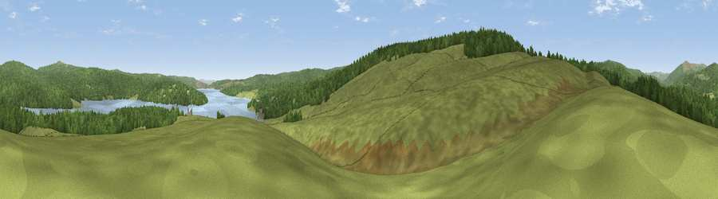

Viewpoint c11775_7300
#24931 in England · top 55% of its area beats it · —Where it is
The exact computed spot (NY 65025 88775). Click the marker for map links.
The view, rendered

A 360° render of this exact spot computed from the terrain model, tree cover and land cover — summer colours, afternoon light, calibrated against photographs of famous viewpoints. Real trees, hedges and buildings will differ in detail.
The panorama
Grey silhouette: terrain skyline in each direction (720 bearings, Earth curvature and refraction included). Dashed green: skyline with trees (+15 m) and buildings (+8 m) as obstacles. Blue strip: how far the ground is visible on each bearing.
Where the view opens
Wedge length = distance to the farthest visible ground on that bearing (vegetation-aware). Rings at 10, 25 and 50 km.
What fills the view
47% grassland · 43% woodland · 11% water
Angular shares of the visible panorama (visual magnitude), not map area. Landscape diversity 0.42 (0–1 Shannon).
Key numbers
More beautiful places nearby
The staircase of upgrades: each row has a higher view potential than everything closer. Driving times are estimates from straight-line distance, calibrated against real road routing — check an actual route before setting out.
| Place | Direction | Drive | Score |
|---|---|---|---|
| Viewpoint c11858_7278 | NNW · 4 km | ~10 min | 51.0 |
| Viewpoint near Falstone | E · 5 km | ~11 min | 61.2 |
| Viewpoint c11839_7214 | NW · 5 km | ~12 min | 62.3 |
| Purdom Pikes | NW · 6 km | ~12 min | 65.5 |
| Pike Knowe | N · 6 km | ~12 min | 71.2 |
| Viewpoint c11634_7288 | S · 7 km | ~15 min | 71.8 |
| Monkside | NNE · 7 km | ~15 min | 78.4 |
| Deadwater Fell | NNW · 9 km | ~17 min | 79.4 |
55.19200, -2.55091 · source: screening · position refined by local search. Computed location — check access rights before visiting.